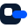
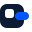
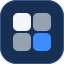
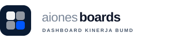
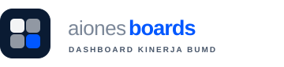
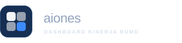

Mark — papan dengan panel biru yang keluar


120 · 64 · 32 · 16 px

latar gelap · varian papan putih
Lockup — "boards" dominan, garis biru pengikut tagline

latar terang

alternatif: boards biru

latar gelap
Pemakaian di sidebar
Aiones Boards
Aiones Boards